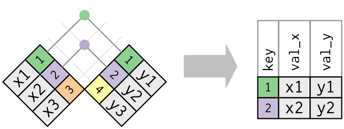

library(dplyr)
library(ggplot2)
library(nycflights23)18 M6A: Wrangling and Tidying Data
This content draws on material from Statistical Inference via Data Science: A ModernDive into R and the Tidyverse [Second Edition] by Chester Ismay, Albert Y. Kim, and Arturo Valdivia licensed under CC BY-NC-SA 4.0
Changes to the source material include addition of new material; light editing; rearranging, removing, and combining original material; adding and changing links; and adding first-person language from current author.
The resulting content is licensed under CC BY-NC-SA 4.0.
18.1 Introduction
Two weeks ago, we learned about importing a dataset into R. However, sometimes the dataset that we’ve found isn’t precisely the data that we need. In this walkthrough, we’ll practice wrangling data and tidying data—two skills that help us transform the data we have into the data we want.
18.2 Wrangling
In this section, we’ll cover a series of functions from the dplyr package for data wrangling that will allow you to take a data frame and “wrangle” it (transform it) to suit your needs. Such functions include:
filter()a data frame’s existing rows to only pick out a subset of them.mutate()its existing columns/variables to create new ones. For example, convert hourly temperature recordings from degrees Fahrenheit to degrees Celsius.arrange()its rows. For example, sort rows of a dataframe in ascending or descending order of a particular variable.join()it with another data frame by matching along a “key” variable. In other words, merge these two data frames together.
Notice how I’ve used computer_code font to describe the actions we want to take on our data frames. This is because the dplyr package for data wrangling has intuitively verb-named functions that are easy to remember.
There is a further benefit to learning to use the dplyr package for data wrangling: its similarity to the database querying language SQL (pronounced “sequel” or spelled out as “S”, “Q”, “L”). SQL (which stands for “Structured Query Language”) is used to manage large databases quickly and efficiently and is widely used by many institutions with a lot of data. While SQL is a topic left for a book or a course on database management, keep in mind that once you learn dplyr, you can learn SQL more easily.
Needed packages
Let’s load all the packages needed for our wrangling practice (this assumes you’ve already installed them). If needed, read Section Section 6.3 for information on how to install and load R packages.
18.2.1 The pipe operator: |>
Before we start data wrangling, let’s first introduce a nifty tool that has been a part of R since May 2021: the native pipe operator |>. The pipe operator allows us to combine multiple operations in R into a single sequential chain of actions. In modern R, the native pipe operator |> is now the default for chaining functions, replacing the previously common tidyverse pipe (%>%) that was loaded with the dplyr package. Introduced in R 4.1.0 in May 2021, |> offers a more intuitive and readable syntax for data wrangling and other tasks, eliminating the need for additional package dependencies.
You’ll still often see R code using %>% in older scripts or searches online, but we’ll use |> in this class. The tidyverse pipe still works, so don’t worry if you see it in other code.
Let’s start with a hypothetical example. Say you would like to perform a hypothetical sequence of operations on a hypothetical data frame x using hypothetical functions f(), g(), and h():
- Take
xthen - Use
xas an input to a functionf()then - Use the output of
f(x)as an input to a functiong()then - Use the output of
g(f(x))as an input to a functionh()
One way to achieve this sequence of operations is by using nesting parentheses as follows:
h(g(f(x)))This code isn’t so hard to read since we are applying only three functions: f(), then g(), then h() and each of the functions is short in its name. Further, each of these functions also only has one argument. However, you can imagine that this will get progressively harder to read as the number of functions applied in your sequence increases and the arguments in each function increase as well. This is where the pipe operator |> comes in handy. |> takes the output of one function and then “pipes” it to be the input of the next function. Furthermore, a helpful trick is to read |> as “then” or “and then.” For example, you can obtain the same output as the hypothetical sequence of functions as follows:
x |>
f() |>
g() |>
h()You would read this sequence as:
- Take
xthen - Use this output as the input to the next function
f()then - Use this output as the input to the next function
g()then - Use this output as the input to the next function
h()
So while both approaches achieve the same goal, the latter is much more human-readable because you can clearly read the sequence of operations line-by-line. But what are the hypothetical x, f(), g(), and h()? Throughout this chapter on data wrangling:
- The starting value
xwill be a data frame. For example, theflightsdata frame we explored in Section Section 6.4. - The sequence of functions, here
f(),g(), andh(), will mostly be a sequence of any number of the six data-wrangling verb-named functions we listed in the introduction to this chapter. For example, thefilter(carrier == "MQ")function and argument specified we previewed earlier. - The result will be the transformed/modified data frame that you want. In our example, we’ll save the result in a new data frame by using the
<-assignment operator with the namealaska_flightsviaalaska_flights <-.
envoy_flights <- flights |>
filter(carrier == "AS")Keep in mind, there are many more advanced data-wrangling functions than just the six listed in the introduction to this chapter; you’ll see some examples of these in Section Section 18.2.7. However, just with these six verb-named functions you’ll be able to perform a broad array of data-wrangling tasks for the rest of this book.
18.2.2 filter rows

The filter() function here works much like the “Filter” option in Microsoft Excel; it allows you to specify criteria about the values of a variable in your dataset and then filters out only the rows that match that criteria.
We begin by focusing only on flights from New York City to Phoenix, Arizona. The dest destination code (or airport code) for Phoenix, Arizona is "PHX". Run the following and look at the results in RStudio’s spreadsheet viewer to ensure that only flights heading to Phoenix are chosen here:
phoenix_flights <- flights |>
filter(dest == "PHX")
View(phoenix_flights)Note the order of the code. First, take the flights data frame flights then filter() the data frame so that only those where the dest equals "PHX" are included. We test for equality using the double equal sign == and not a single equal sign =. In other words, filter(dest = "PHX") will yield an error. This is a convention across many programming languages. If you are new to coding, you’ll probably forget to use the double equal sign == a few times before you get the hang of it.
You can use other operators beyond just the == operator that tests for equality:
>corresponds to “greater than”<corresponds to “less than”>=corresponds to “greater than or equal to”<=corresponds to “less than or equal to”!=corresponds to “not equal to.” The!is used in many programming languages to indicate “not.”
Furthermore, you can combine multiple criteria using operators that make comparisons:
|corresponds to “or”&corresponds to “and”
To see many of these in action, let’s filter flights for all rows that departed from JFK and were heading to Burlington, Vermont ("BTV") or Seattle, Washington ("SEA") and departed in the months of October, November, or December. Run the following:
btv_sea_flights_fall <- flights |>
filter(origin == "JFK" & (dest == "BTV" | dest == "SEA") & month >= 10)
View(btv_sea_flights_fall)Note that even though colloquially speaking one might say “all flights leaving Burlington, Vermont and Seattle, Washington,” in terms of computer operations, we really mean “all flights leaving Burlington, Vermont or leaving Seattle, Washington.” For a given row in the data, dest can be "BTV", or "SEA", or something else, but not both "BTV" and "SEA" at the same time. Furthermore, note the careful use of parentheses around dest == "BTV" | dest == "SEA".
We can often skip the use of & and just separate our conditions with a comma. The previous code will return the identical output btv_sea_flights_fall as the following code:
btv_sea_flights_fall <- flights |>
filter(origin == "JFK", (dest == "BTV" | dest == "SEA"), month >= 10)
View(btv_sea_flights_fall)Let’s present another example that uses the ! “not” operator to pick rows that don’t match a criteria. As mentioned earlier, the ! can be read as “not.” Here we are filtering rows corresponding to flights that didn’t go to Burlington, VT or Seattle, WA.
not_BTV_SEA <- flights |>
filter(!(dest == "BTV" | dest == "SEA"))
View(not_BTV_SEA)Again, note the careful use of parentheses around the (dest == "BTV" | dest == "SEA"). If we didn’t use parentheses as follows:
flights |> filter(!dest == "BTV" | dest == "SEA")We would be returning all flights not headed to "BTV" or those headed to "SEA", which is an entirely different resulting data frame.
Now say we have a larger number of airports we want to filter for, say "SEA", "SFO", "PHX", "BTV", and "BDL". We could continue to use the | (or) operator.
many_airports <- flights |>
filter(dest == "SEA" | dest == "SFO" | dest == "PHX" |
dest == "BTV" | dest == "BDL")As we progressively include more airports, this will get unwieldy to write. A slightly shorter approach uses the %in% operator along with the c() function. Recall from Subsection Section 6.2.1 that the c() function “combines” or “concatenates” values into a single vector of values.
many_airports <- flights |>
filter(dest %in% c("SEA", "SFO", "PHX", "BTV", "BDL"))
View(many_airports)What this code is doing is filtering flights for all flights where dest is in the vector of airports c("BTV", "SEA", "PHX", "SFO", "BDL"). Both outputs of many_airports are the same, but as you can see the latter takes much less energy to code. The %in% operator is useful for looking for matches commonly in one vector/variable compared to another.
As a final note, I recommend that filter() should often be among the first verbs you consider applying to your data. This cleans your dataset to only those rows you care about; put differently, it narrows down the scope of your data frame to just the observations you care about.
18.2.3 mutate existing variables

Another common transformation of data is to create/compute new variables based on existing ones as shown in Figure Figure 18.2. For example, say you are more comfortable thinking of temperature in degrees Celsius (°C) instead of degrees Fahrenheit (°F). The formula to convert temperatures from °F to °C is
\[ \text{temp in C} = \frac{\text{temp in F} - 32}{1.8} \]
We can apply this formula to the temp variable using the mutate() function from the dplyr package, which takes existing variables and mutates them to create new ones.
weather <- weather |>
mutate(temp_in_C = (temp - 32) / 1.8)In this code, we mutate() the weather data frame by creating a new variable
temp_in_C = (temp - 32) / 1.8,
and then we overwrite the original weather data frame. Why did we overwrite the data frame weather, instead of assigning the result to a new data frame like weather_new?
As a rough rule of thumb, as long as you are not losing original information that you might need later, it’s acceptable practice to overwrite existing data frames with updated ones, as we did here. On the other hand, why did we not overwrite the variable temp, but instead created a new variable called temp_in_C? Because if we did this, we would have erased the original information contained in temp of temperatures in Fahrenheit that may still be valuable to us.
Let’s consider another example. Passengers are often frustrated when their flight departs late, but aren’t as annoyed if, in the end, pilots can make up some time during the flight. This is known in the airline industry as gain, and we will create this variable using the mutate() function:
flights <- flights |>
mutate(gain = dep_delay - arr_delay)Let’s take a look at only the dep_delay, arr_delay, and the resulting gain variables for the first 5 rows in our updated flights data frame in Table Table 18.1.
| dep_delay | arr_delay | gain |
|---|---|---|
| 203 | 205 | -2 |
| 78 | 53 | 25 |
| 47 | 34 | 13 |
| 173 | 166 | 7 |
| 228 | 211 | 17 |
The flight in the first row departed 203 minutes late but arrived 205 minutes late, so its “gained time in the air” is a gain of -2 minutes, hence its gain is \(203 - 205 = -2\), which is a loss of 2 minutes. On the other hand, the flight in the third row departed late (dep_delay of 47) but arrived 34 minutes late (arr_delay of 34), so its “gained time in the air” is \(47 - 34 = 13\) minutes, hence its gain is 13.
To close out our discussion on the mutate() function to create new variables, note that we can create multiple new variables at once in the same mutate() code. Furthermore, within the same mutate() code we can refer to new variables we just created. As an example, consider the mutate() code Hadley Wickham and Garrett Grolemund show in Chapter 5 of R for Data Science [@rds2016]:
flights <- flights |>
mutate(
gain = dep_delay - arr_delay,
hours = air_time / 60,
gain_per_hour = gain / hours
)18.2.4 arrange and sort rows
One of the most commonly performed data-wrangling tasks is to sort a data frame’s rows in the alphanumeric order of one of the variables. The dplyr package’s arrange() function allows us to sort/reorder a data frame’s rows according to the values of the specified variable.
Suppose we are interested in determining the most frequent destination airports for all domestic flights departing from New York City in 2023. To do this requires using the group_by() function, which we won’t cover in detail until later, but you should be able to get a sense for what it does and how it fits into everything else here.
freq_dest <- flights |>
group_by(dest) |>
summarize(num_flights = n())
freq_dest# A tibble: 118 × 2
dest num_flights
<chr> <int>
1 ABQ 228
2 ACK 916
3 AGS 20
4 ALB 1581
5 ANC 95
6 ATL 17570
7 AUS 4848
8 AVL 1617
9 AVP 145
10 BDL 701
# ℹ 108 more rowsObserve that by default the rows of the resulting freq_dest data frame are sorted in alphabetical order of destination. Say instead we would like to see the same data, but sorted from the most to the least number of flights (num_flights) instead:
freq_dest |>
arrange(num_flights)# A tibble: 118 × 2
dest num_flights
<chr> <int>
1 LEX 1
2 AGS 20
3 OGG 20
4 SBN 24
5 HDN 28
6 PNS 71
7 MTJ 77
8 ANC 95
9 VPS 109
10 AVP 145
# ℹ 108 more rowsThis is, however, the opposite of what we want. The rows are sorted with the least frequent destination airports displayed first. This is because arrange() always returns rows sorted in ascending order by default. To switch the ordering to be in “descending” order instead, we use the desc() function as so:
freq_dest |>
arrange(desc(num_flights))# A tibble: 118 × 2
dest num_flights
<chr> <int>
1 BOS 19036
2 ORD 18200
3 MCO 17756
4 ATL 17570
5 MIA 16076
6 LAX 15968
7 FLL 14239
8 CLT 12866
9 DFW 11675
10 SFO 11651
# ℹ 108 more rows18.2.5 join data frames
Another common data transformation task is “joining” or “merging” two different datasets. For example, in the flights data frame, the variable carrier lists the carrier code for the different flights. While the corresponding airline names for "UA" and "AA" might be somewhat easy to guess (United and American Airlines), what airlines have codes "VX", "HA", and "B6"? This information is provided in a separate data frame airlines.
View(airlines)We see that in airlines, carrier is the carrier code, while name is the full name of the airline company. Using this table, we can see that "G4", "HA", and "B6" correspond to Allegiant Air, Hawaiian Airlines, and JetBlue, respectively. However, wouldn’t it be nice to have all this information in a single data frame instead of two separate data frames? We can do this by “joining” the flights and airlines data frames.
The values in the variable carrier in the flights data frame match the values in the variable carrier in the airlines data frame. In this case, we can use the variable carrier as a key variable to match the rows of the two data frames. Key variables are almost always identification variables that uniquely identify the observational units as we saw in Subsection Section 6.4.4. This ensures that rows in both data frames are appropriately matched during the join. Hadley and Garrett [@rds2016] created the diagram in Figure Figure 18.3 to show how the different data frames in the nycflights23 package are linked by various key variables:

18.2.5.1 Matching key variable names
In both the flights and airlines data frames, the key variable we want to join/merge/match the rows by has the same name: carrier. Let’s use the inner_join() function to join the two data frames, where the rows will be matched by the variable carrier, and then compare the resulting data frames:
flights_joined <- flights |>
inner_join(airlines, by = "carrier")
View(flights)
View(flights_joined)Observe that the flights and flights_joined data frames are identical except that flights_joined has an additional variable name. The values of name correspond to the airline companies’ names as indicated in the airlines data frame.
A visual representation of the inner_join() is shown in Figure Figure 18.4. There are other types of joins available (such as left_join(), right_join(), outer_join(), and anti_join()), but the inner_join() will solve nearly all of the problems you’ll encounter in this book.

18.2.5.2 Different key variable names
Say instead you are interested in the destinations of all domestic flights departing NYC in 2023, and you ask yourself questions like: “What cities are these airports in?”, or “Is "ORD" Orlando?”, or “Where is "FLL"?”.
The airports data frame contains the airport codes for each airport:
View(airports)However, if you look at both the airports and flights data frames, you’ll find that the airport codes are in variables that have different names. In airports, the airport code is in faa, whereas in flights the airport codes are in origin and dest. This fact is further highlighted in the visual representation of the relationships between these data frames in Figure Figure 18.3.
In order to join these two data frames by airport code, our inner_join() operation will use the by = c("dest" = "faa") argument with modified code syntax allowing us to join two data frames where the key variable has a different name:
flights_with_airport_names <- flights |>
inner_join(airports, by = c("dest" = "faa"))
View(flights_with_airport_names)Let’s construct the chain of pipe operators |> that computes the number of flights from NYC to each destination, but also includes information about each destination airport:
named_dests <- flights |>
group_by(dest) |>
summarize(num_flights = n()) |>
arrange(desc(num_flights)) |>
inner_join(airports, by = c("dest" = "faa")) |>
rename(airport_name = name)
named_dests# A tibble: 118 × 9
dest num_flights airport_name lat lon alt tz dst tzone
<chr> <int> <chr> <dbl> <dbl> <dbl> <dbl> <chr> <chr>
1 BOS 19036 General Edward Lawren… 42.4 -71.0 20 -5 A Amer…
2 ORD 18200 Chicago O'Hare Intern… 42.0 -87.9 672 -6 A Amer…
3 MCO 17756 Orlando International… 28.4 -81.3 96 -5 A Amer…
4 ATL 17570 Hartsfield Jackson At… 33.6 -84.4 1026 -5 A Amer…
5 MIA 16076 Miami International A… 25.8 -80.3 8 -5 A Amer…
6 LAX 15968 Los Angeles Internati… 33.9 -118. 125 -8 A Amer…
7 FLL 14239 Fort Lauderdale Holly… 26.1 -80.2 9 -5 A Amer…
8 CLT 12866 Charlotte Douglas Int… 35.2 -80.9 748 -5 A Amer…
9 DFW 11675 Dallas Fort Worth Int… 32.9 -97.0 607 -6 A Amer…
10 SFO 11651 San Francisco Interna… 37.6 -122. 13 -8 A Amer…
# ℹ 108 more rowsIn case you didn’t know, "ORD" is the airport code of Chicago O’Hare airport and "FLL" is the main airport in Fort Lauderdale, Florida, which can be seen in the airport_name variable.
18.2.5.3 Multiple key variables
Say instead we want to join two data frames by multiple key variables. For example, in Figure Figure 18.3, we see that in order to join the flights and weather data frames, we need more than one key variable: year, month, day, hour, and origin. This is because the combination of these 5 variables act to uniquely identify each observational unit in the weather data frame: hourly weather recordings at each of the 3 NYC airports.
We achieve this by specifying a vector of key variables to join by using the c() function. Recall from Subsection Section 6.2.1 that c() is short for “combine” or “concatenate.”
flights_weather_joined <- flights |>
inner_join(weather, by = c("year", "month", "day", "hour", "origin"))
View(flights_weather_joined)18.2.6 Normal forms
The data frames included in the nycflights23 package are in a form that minimizes redundancy of data. For example, the flights data frame only saves the carrier code of the airline company; it does not include the actual name of the airline. For example, you’ll see that the first row of flights has carrier equal to UA, but it does not include the airline name “United Air Lines Inc.”
The names of the airline companies are included in the name variable of the airlines data frame. In order to have the airline company name included in flights, we could join these two data frames as follows:
joined_flights <- flights |>
inner_join(airlines, by = "carrier")
View(joined_flights)We can perform this join because each of the data frames has keys in common to relate one to another: the carrier variable in both the flights and airlines data frames. The key variable(s) that we base our joins on are often identification variables as we mentioned previously.
This is an important property of what’s known as normal forms of data. The process of decomposing data frames into less redundant tables without losing information is called normalization. More information is available on Wikipedia.
Both dplyr and SQL we mentioned in the introduction of this chapter use such normal forms. Given that they share such commonalities, once you learn either of these two tools, you can learn the other very easily.
18.2.7 Other verbs
Here are some other useful data-wrangling verbs:
select()only a subset of variables/columns.relocate()variables/columns to a new position.rename()variables/columns to have new names.- Return only the
top_n()values of a variable.
18.2.7.1 select variables

We’ve seen that the flights data frame in the nycflights23 package contains 19 different variables. You can identify the names of these 19 variables by running the glimpse() function from the dplyr package:
glimpse(flights)However, say you only need two of these 19 variables, say carrier and flight. You can select() these two variables:
flights |>
select(carrier, flight)This function makes it easier to explore large datasets since it allows us to limit the scope to only those variables we care most about. For example, if we select() only a smaller number of variables as is shown in Figure Figure 18.5, it will make viewing the dataset in RStudio’s spreadsheet viewer more digestible.
Let’s say instead you want to drop, or de-select, certain variables. For example, consider the variable year in the flights data frame. This variable isn’t quite a “variable” because it is always 2023 and hence doesn’t change. Say you want to remove this variable from the data frame. We can deselect year by using the - sign:
flights_no_year <- flights |> select(-year)Another way of selecting columns/variables is by specifying a range of columns:
flight_arr_times <- flights |> select(month:day, arr_time:sched_arr_time)
flight_arr_timesThis will select() all columns between month and day, as well as between arr_time and sched_arr_time, and drop the rest.
The helper functions starts_with(), ends_with(), and contains() can be used to select variables/columns that match those conditions. As examples,
flights |> select(starts_with("a"))
flights |> select(ends_with("delay"))
flights |> select(contains("time"))Lastly, the select() function can also be used to reorder columns when used with the everything() helper function. For example, suppose we want the hour, minute, and time_hour variables to appear immediately after the year, month, and day variables, while not discarding the rest of the variables. In the following code, everything() will pick up all remaining variables:
flights_reorder <- flights |>
select(year, month, day, hour, minute, time_hour, everything())
glimpse(flights_reorder)18.2.7.2 relocate variables
Another (usually shorter) way to reorder variables is by using the relocate() function. This function allows you to move variables to a new position in the data frame. For example, if we want to move the hour, minute, and time_hour variables to appear immediately after the year, month, and day variables, we can use the following code:
flights_relocate <- flights |>
relocate(hour, minute, time_hour, .after = day)
glimpse(flights_relocate)18.2.7.3 rename variables
One more useful function is rename(), which as you may have guessed changes the name of variables. Suppose we want to only focus on dep_time and arr_time and change dep_time and arr_time to be departure_time and arrival_time instead in the flights_time_new data frame:
flights_time_new <- flights |>
select(dep_time, arr_time) |>
rename(departure_time = dep_time, arrival_time = arr_time)
glimpse(flights_time_new)Note that in this case we used a single = sign within the rename(). For example, departure_time = dep_time renames the dep_time variable to have the new name departure_time. This is because we are not testing for equality like we would using ==. Instead we want to assign a new variable departure_time to have the same values as dep_time and then delete the variable dep_time. Note that new dplyr users often forget that the new variable name comes before the equal sign.
18.2.8 top_n values of a variable
We can also return the top n values of a variable using the top_n() function. For example, we can return a data frame of the top 10 destination airports using the example from Subsection Section 18.2.5.2. Observe that we set the number of values to return to n = 10 and wt = num_flights to indicate that we want the rows corresponding to the top 10 values of num_flights. See the help file for top_n() by running ?top_n for more information.
named_dests |> top_n(n = 10, wt = num_flights)Let’s further arrange() these results in descending order of num_flights:
named_dests |>
top_n(n = 10, wt = num_flights) |>
arrange(desc(num_flights))18.3 Tidying Data
In Subsection Section 6.2.1, I introduced the concept of a data frame in R: a rectangular spreadsheet-like representation of data where the rows correspond to observations and the columns correspond to variables describing each observation. In Section Section 6.4, we started exploring our first data frame: the flights data frame included in the nycflights23 package.
In the first section of this walkthrough, we learned how to take existing data frames and transform/modify them to suit our ends. In this second section, we extend some of these ideas by discussing a type of data formatting called “tidy” data. You will see that having data stored in “tidy” format is about more than just what the everyday definition of the term “tidy” might suggest: having your data “neatly organized.” Instead, we define the term “tidy” as it’s used by data scientists who use R, outlining a set of rules by which data is saved.
Knowing about tidy data was not necessary earlier because all the data we used were already in “tidy” format. In this walkthrough, we’ll now see that this format is essential to using the tools we’ve covered. Furthermore, it will also be useful for future walkthroughs as we cover future ideas.
Needed packages
Let’s load all the packages needed for this walkthrough (this assumes you’ve already installed them). If needed, read Section Section 6.3 for information on how to install and load R packages.
library(dplyr)
library(readr)
library(tidyr)
library(nycflights23)
library(fivethirtyeight)
library(here)Note that when you load the fivethirtyeight package, you’ll receive the following message:
Some larger datasets need to be installed separately, like senators and house_district_forecast. To install these, we recommend you install the fivethirtyeightdata package by running: install.packages(‘fivethirtyeightdata’, repos = ‘https://fivethirtyeightdata.github.io/drat/’, type = ‘source’)
This message can be ignored for the purposes of this book, but if you’d like to explore these larger datasets, you can install the fivethirtyeightdata package as suggested.
18.3.1 Importing data
Up to this point, most of our activities have used data stored inside of an R package, though we have practiced importing data from an outside source in Section Section 12.4. It’s time to put that practice to use!
To practice tidying data, we need to load a Comma Separated Values .csv file, the same format that I encouraged you to find for your personal dataset. You can think of a .csv file as a bare-bones spreadsheet where:
- Each line in the file corresponds to one row of data/one observation.
- Values for each line are separated with commas. In other words, the values of different variables are separated by commas in each row.
- The first line is often, but not always, a header row indicating the names of the columns/variables.
The .csv file we’re interested in here is dem_score.csv—it is found in the activity_data subfolder of your class project folder and contains ratings of the level of democracy in different countries spanning 1952 to 1992. Let’s use the read_csv() function from the readr package (with some help from the @here package) to read it from your computer, import it into R, and save it in a data frame called dem_score.
library(readr)
dem_score <- read_csv(here("activity_data","dem_score.csv"))
dem_score# A tibble: 96 × 10
country `1952` `1957` `1962` `1967` `1972` `1977` `1982` `1987` `1992`
<chr> <dbl> <dbl> <dbl> <dbl> <dbl> <dbl> <dbl> <dbl> <dbl>
1 Albania -9 -9 -9 -9 -9 -9 -9 -9 5
2 Argentina -9 -1 -1 -9 -9 -9 -8 8 7
3 Armenia -9 -7 -7 -7 -7 -7 -7 -7 7
4 Australia 10 10 10 10 10 10 10 10 10
5 Austria 10 10 10 10 10 10 10 10 10
6 Azerbaijan -9 -7 -7 -7 -7 -7 -7 -7 1
7 Belarus -9 -7 -7 -7 -7 -7 -7 -7 7
8 Belgium 10 10 10 10 10 10 10 10 10
9 Bhutan -10 -10 -10 -10 -10 -10 -10 -10 -10
10 Bolivia -4 -3 -3 -4 -7 -7 8 9 9
# ℹ 86 more rowsIn this dem_score data frame, the minimum value of -10 corresponds to a highly autocratic nation, whereas a value of 10 corresponds to a highly democratic nation. Note also that backticks surround the different variable names. Variable names in R by default are not allowed to start with a number nor include spaces, but we can get around this fact by surrounding the column name with backticks. We’ll revisit the dem_score data frame in a case study in the upcoming Section Section 18.3.5.
Note that the read_csv() function included in the readr package is different than the read.csv() function that comes installed with R. While the difference in the names might seem trivial (an _ instead of a .), the read_csv() function is, in my opinion, easier to use since it can more easily read data off the web and generally imports data at a much faster speed. Furthermore, the read_csv() function included in the readr saves data frames as tibbles by default.
18.3.2 “Tidy” data
With our data imported, let’s learn about the concept of “tidy” data format with a motivating example from the fivethirtyeight package. The fivethirtyeight package provides access to the datasets used in many articles published by the now-slightly-defunct data journalism website, FiveThirtyEight.com. For a complete list of all 129 datasets included in the fivethirtyeight package, check out the package webpage by going to: https://fivethirtyeight-r.netlify.app/articles/fivethirtyeight.html.
Let’s focus our attention on the drinks data frame and look at its first 5 rows:
# A tibble: 5 × 5
country beer_servings spirit_servings wine_servings total_litres_of_pure…¹
<chr> <int> <int> <int> <dbl>
1 Afghanistan 0 0 0 0
2 Albania 89 132 54 4.9
3 Algeria 25 0 14 0.7
4 Andorra 245 138 312 12.4
5 Angola 217 57 45 5.9
# ℹ abbreviated name: ¹total_litres_of_pure_alcoholAfter reading the help file by running ?drinks, you’ll see that drinks is a data frame containing results from a survey of the average number of servings of beer, spirits, and wine consumed in 193 countries. This data was originally reported on FiveThirtyEight.com in Mona Chalabi’s article: “Dear Mona Followup: Where Do People Drink The Most Beer, Wine And Spirits?”. It’s important to note that Chalabi is no longer with FiveThirtyEight and has been sharply critical of the organization since her leaving.
Let’s apply some of the data wrangling verbs we learned in Section Chapter 18 on the drinks data frame:
filter()thedrinksdata frame to only consider 4 countries: the United States, China, Italy, and Saudi Arabia, thenselect()all columns excepttotal_litres_of_pure_alcoholby using the-sign, thenrename()the variablesbeer_servings,spirit_servings, andwine_servingstobeer,spirit, andwine, respectively.
and save the resulting data frame in drinks_smaller:
drinks_smaller <- drinks |>
filter(country %in% c("USA", "China", "Italy", "Saudi Arabia")) |>
select(-total_litres_of_pure_alcohol) |>
rename(beer = beer_servings, spirit = spirit_servings, wine = wine_servings)
drinks_smaller# A tibble: 4 × 4
country beer spirit wine
<chr> <int> <int> <int>
1 China 79 192 8
2 Italy 85 42 237
3 Saudi Arabia 0 5 0
4 USA 249 158 84Let’s compare this way of organizing the data with an alternative:
drinks_smaller_tidy <- drinks_smaller |>
gather(type, servings, -country)
drinks_smaller_tidy# A tibble: 12 × 3
country type servings
<chr> <chr> <int>
1 China beer 79
2 Italy beer 85
3 Saudi Arabia beer 0
4 USA beer 249
5 China spirit 192
6 Italy spirit 42
7 Saudi Arabia spirit 5
8 USA spirit 158
9 China wine 8
10 Italy wine 237
11 Saudi Arabia wine 0
12 USA wine 84Observe that while drinks_smaller and drinks_smaller_tidy are both rectangular in shape and contain the same 12 numerical values (3 alcohol types by 4 countries), they are formatted differently. drinks_smaller is formatted in what’s known as “wide” format, whereas drinks_smaller_tidy is formatted in what’s known as “long/narrow” format.
In the context of doing data science in R, long/narrow format is also known as “tidy” format. In order to use the packages that we prefer in this class, your input data frames must be in “tidy” format. Thus, all non-“tidy” data must be converted to “tidy” format first. Before we convert non-“tidy” data frames like drinks_smaller to “tidy” data frames like drinks_smaller_tidy, let’s define “tidy” data.
18.3.3 Definition of “tidy” data
You have surely heard the word “tidy” in your life:
- “Tidy up your room!”
- “Write your homework in a tidy way so it is easier to provide feedback.”
- Marie Kondo’s best-selling book, The Life-Changing Magic of Tidying Up: The Japanese Art of Decluttering and Organizing, and Netflix TV series Tidying Up with Marie Kondo.
What does it mean for your data to be “tidy”? While “tidy” has a clear English meaning of “organized,” the word “tidy” in data science using R means that your data follows a standardized format. We will follow Hadley Wickham’s (2014) definition of “tidy” data shown also in Figure Figure 18.6:
A dataset is a collection of values, usually either numbers (if quantitative) or strings AKA text data (if qualitative/categorical). Values are organised in two ways. Every value belongs to a variable and an observation. A variable contains all values that measure the same underlying attribute (like height, temperature, duration) across units. An observation contains all values measured on the same unit (like a person, or a day, or a city) across attributes.
“Tidy” data is a standard way of mapping the meaning of a dataset to its structure. A dataset is messy or tidy depending on how rows, columns and tables are matched up with observations, variables and types. In tidy data:
- Each variable forms a column.
- Each observation forms a row.
- Each type of observational unit forms a table.

For example, say you have the following table of stock prices in Table Table 18.2:
| Date | Boeing stock price | Amazon stock price | Google stock price |
|---|---|---|---|
| 2009-01-01 | $173.55 | $174.90 | $174.34 |
| 2009-01-02 | $172.61 | $171.42 | $170.04 |
Although the data are neatly organized in a rectangular spreadsheet-type format, they do not follow the definition of data in “tidy” format. While there are three variables corresponding to three unique pieces of information (date, stock name, and stock price), there are not three columns. In “tidy” data format, each variable should be its own column, as shown in Table Table 18.3. Notice that both tables present the same information, but in different formats.
Although the data is in a rectangular spreadsheet format, it is not “tidy.” There are three variables (date, stock name, and stock price), but not three separate columns. In tidy data, each variable should have its own column, as shown in Table Table 18.3. Both tables present the same information, but in different formats.
| Date | Stock Name | Stock Price |
|---|---|---|
| 2009-01-01 | Boeing | $173.55 |
| 2009-01-01 | Amazon | $174.90 |
| 2009-01-01 | $174.34 | |
| 2009-01-02 | Boeing | $172.61 |
| 2009-01-02 | Amazon | $171.42 |
| 2009-01-02 | $170.04 |
On the other hand, consider the data in Table Table 18.4.
| Date | Boeing Price | Weather |
|---|---|---|
| 2009-01-01 | $173.55 | Sunny |
| 2009-01-02 | $172.61 | Overcast |
In this case, even though the variable “Boeing Price” occurs just like in our non-“tidy” data in Table Table 18.2, the data is “tidy” since there are three variables for each of three unique pieces of information: Date, Boeing price, and the Weather that day.
18.3.4 Converting to “tidy” data
In our walkthroughs so far, you’ve only seen data frames that were already in “tidy” format. Furthermore, for the rest of the semester, you’ll mostly only see data frames that are already in “tidy” format as well. However, this is not always the case with all datasets—including, perhaps, the dataset that you’ve chosen to work with for your class projects. If your original data frame is in wide (non-“tidy”) format and you would like to use the packages we learn about, you will first have to convert it to “tidy” format. (If you’re not sure if your data is tidy, reach out and ask me—I can help you figure this out!) To do so, we recommend using the pivot_longer() function in the tidyr package.
Going back to our drinks_smaller data frame from earlier:
drinks_smaller# A tibble: 4 × 4
country beer spirit wine
<chr> <int> <int> <int>
1 China 79 192 8
2 Italy 85 42 237
3 Saudi Arabia 0 5 0
4 USA 249 158 84We convert it to “tidy” format by using the pivot_longer() function from the tidyr package as follows:
drinks_smaller_tidy <- drinks_smaller |>
pivot_longer(names_to = "type",
values_to = "servings",
cols = -country)
drinks_smaller_tidy# A tibble: 12 × 3
country type servings
<chr> <chr> <int>
1 China beer 79
2 China spirit 192
3 China wine 8
4 Italy beer 85
5 Italy spirit 42
6 Italy wine 237
7 Saudi Arabia beer 0
8 Saudi Arabia spirit 5
9 Saudi Arabia wine 0
10 USA beer 249
11 USA spirit 158
12 USA wine 84We set the arguments to pivot_longer() as follows:
names_tohere corresponds to the name of the variable in the new “tidy”/long data frame that will contain the column names of the original data. Observe how we setnames_to = "type". In the resultingdrinks_smaller_tidy, the columntypecontains the three types of alcoholbeer,spirit, andwine. Sincetypeis a variable name that doesn’t appear indrinks_smaller, we use quotation marks around it. You’ll receive an error if you just usenames_to = typehere.values_tohere is the name of the variable in the new “tidy” data frame that will contain the values of the original data. Observe how we setvalues_to = "servings"since each of the numeric values in each of thebeer,wine, andspiritcolumns of thedrinks_smallerdata corresponds to a value ofservings. In the resultingdrinks_smaller_tidy, the columnservingscontains the 4 \(\times\) 3 = 12 numerical values. Note again thatservingsdoesn’t appear as a variable indrinks_smallerso it again needs quotation marks around it for thevalues_toargument.- The third argument
colsis the columns in thedrinks_smallerdata frame you either want to or don’t want to “tidy.” Observe how we set this to-countryindicating that we don’t want to “tidy” thecountryvariable indrinks_smallerand rather onlybeer,spirit, andwine. Sincecountryis a column that appears indrinks_smallerwe don’t put quotation marks around it.
The third argument here of cols is a little nuanced, so let’s consider code that’s written slightly differently but that produces the same output:
drinks_smaller |>
pivot_longer(names_to = "type",
values_to = "servings",
cols = c(beer, spirit, wine))Note that the third argument now specifies which columns we want to “tidy” with c(beer, spirit, wine), instead of the columns we don’t want to “tidy” using -country. We use the c() function to create a vector of the columns in drinks_smaller that we’d like to “tidy.” Note that since these three columns appear one after another in the drinks_smaller data frame, we could also do the following for the cols argument:
drinks_smaller |>
pivot_longer(names_to = "type",
values_to = "servings",
cols = beer:wine)Converting “wide” format data to “tidy” format often confuses new R users. The only way to learn to get comfortable with the pivot_longer() function is with practice, practice, and more practice using different datasets. For example, run ?pivot_longer and look at the examples in the bottom of the help file. We’ll show another example of using pivot_longer() to convert a “wide” formatted data frame to “tidy” format in Section Section 18.3.5.
18.3.4.1 nycflights23 package
Recall the nycflights23 package we introduced in Section Section 6.4 with data about all domestic flights departing from New York City in 2023. Let’s revisit the flights data frame by running View(flights). We saw that flights has a rectangular shape, with each of its 435,352 rows corresponding to a flight and each of its 22 columns corresponding to different characteristics/measurements of each flight. This satisfied the first two criteria of the definition of “tidy” data from Subsection Section 18.3.3: that “Each variable forms a column” and “Each observation forms a row.” But what about the third property of “tidy” data that “Each type of observational unit forms a table”?
Recall that we saw in Subsection Section 6.4.3 that the observational unit for the flights data frame is an individual flight. In other words, the rows of the flights data frame refer to characteristics/measurements of individual flights. Also included in the nycflights23 package are other data frames with their rows representing different observational units [@R-nycflights23]:
airlines: translation between two letter IATA carrier codes and airline company names (14 in total). The observational unit is an airline company.planes: aircraft information about each of 4,840 planes used, i.e., the observational unit is an aircraft.weather: hourly meteorological data (about 8,736 observations) for each of the three NYC airports, i.e., the observational unit is an hourly measurement of weather at one of the three airports.airports: airport names and locations. The observational unit is an airport.
The organization of the information into these five data frames follows the third “tidy” data property: observations corresponding to the same observational unit should be saved in the same table, i.e., data frame. You could think of this property as the old English expression: “birds of a feather flock together.”
18.3.5 Case study: Democracy in Guatemala
In this section, we’ll show you another example of how to convert a data frame that isn’t in “tidy” format (“wide” format) to a data frame that is in “tidy” format (“long/narrow” format). We’ll do this using the pivot_longer() function from the tidyr package again.
Let’s use the dem_score data frame we imported in Section Section 18.3.1, but focus on only data corresponding to Guatemala.
guat_dem <- dem_score |>
filter(country == "Guatemala")
guat_dem# A tibble: 1 × 10
country `1952` `1957` `1962` `1967` `1972` `1977` `1982` `1987` `1992`
<chr> <dbl> <dbl> <dbl> <dbl> <dbl> <dbl> <dbl> <dbl> <dbl>
1 Guatemala 2 -6 -5 3 1 -3 -7 3 3Now we are stuck in a predicament, much like with our drinks_smaller example in Section Section 18.3.2. We see that we have a variable named country, but its only value is "Guatemala". We have other variables denoted by different year values. Unfortunately, the guat_dem data frame is not “tidy.”
We need to take the values of the columns corresponding to years in guat_dem and convert them into a new “names” variable called year. Furthermore, we need to take the democracy score values in the inside of the data frame and turn them into a new “values” variable called democracy_score. Our resulting data frame will have three columns: country, year, and democracy_score. Recall that the pivot_longer() function in the tidyr package does this for us:
guat_dem_tidy <- guat_dem |>
pivot_longer(names_to = "year",
values_to = "democracy_score",
cols = -country,
names_transform = list(year = as.integer))
guat_dem_tidy# A tibble: 9 × 3
country year democracy_score
<chr> <int> <dbl>
1 Guatemala 1952 2
2 Guatemala 1957 -6
3 Guatemala 1962 -5
4 Guatemala 1967 3
5 Guatemala 1972 1
6 Guatemala 1977 -3
7 Guatemala 1982 -7
8 Guatemala 1987 3
9 Guatemala 1992 3We set the arguments to pivot_longer() as follows:
names_tois the name of the variable in the new “tidy” data frame that will contain the column names of the original data. Observe how we setnames_to = "year". In the resultingguat_dem_tidy, the columnyearcontains the years where Guatemala’s democracy scores were measured.values_tois the name of the variable in the new “tidy” data frame that will contain the values of the original data. Observe how we setvalues_to = "democracy_score". In the resultingguat_dem_tidythe columndemocracy_scorecontains the 1 \(\times\) 9 = 9 democracy scores as numeric values.- The third argument is the columns you either want to or don’t want to “tidy.” Observe how we set this to
cols = -countryindicating that we don’t want to “tidy” thecountryvariable inguat_demand rather only variables1952through1992. - The last argument of
names_transformtells R what type of variableyearshould be set to. Without specifying that it is anintegeras we’ve done here,pivot_longer()will set it to be a character value by default.
18.4 tidyverse package
Notice at the beginning of the chapter we loaded the following three packages, which are among the most frequently used R packages for data science:
library(dplyr)
library(readr)
library(tidyr)Recall that dplyr is for data wrangling, readr is for importing spreadsheet data into R, and tidyr is for converting data to “tidy” format. There is a much quicker way to load these packages than by individually loading them: by installing and loading the tidyverse package. The tidyverse package acts as an “umbrella” package whereby installing/loading it will install/load multiple packages at once for you.
After installing the tidyverse package as you would a normal package (as seen in Section Section 6.3), running:
library(tidyverse)would be the same as running:
library(ggplot2)
library(dplyr)
library(readr)
library(tidyr)
library(purrr)
library(tibble)
library(stringr)
library(forcats)We’ll cover ggplot2 in a future walk through, but the other packages are more than we need in 661. You can check out R for Data Science to learn about these packages.
For the remainder of this book, we’ll start every walkthrough by running library(tidyverse), instead of loading the various component packages individually. The tidyverse “umbrella” package gets its name from the fact that all the functions in all its packages are designed to have common inputs and outputs: data frames are in “tidy” format. This standardization of input and output data frames makes transitions between different functions in the different packages as seamless as possible. For more information, check out the tidyverse.org webpage for the package.
18.5 References
Grolemund, G., & Wickham, H. (2017). R for Data Science (1st edition). O’Reilly Media. https://r4ds.had.co.nz/.
Wickham, H. (2014). Tidy data. Journal of Statistical Software, 59(10). https://www.jstatsoft.org/index.php/jss/article/view/v059i10/v59i10.pdf.